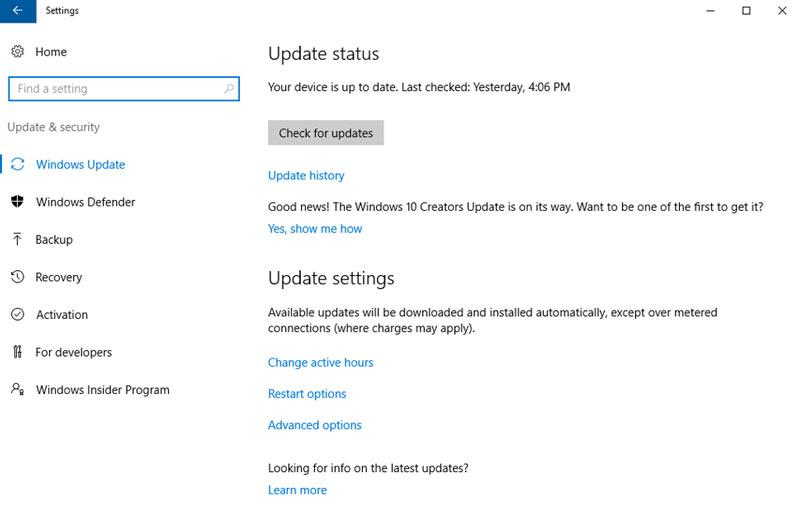
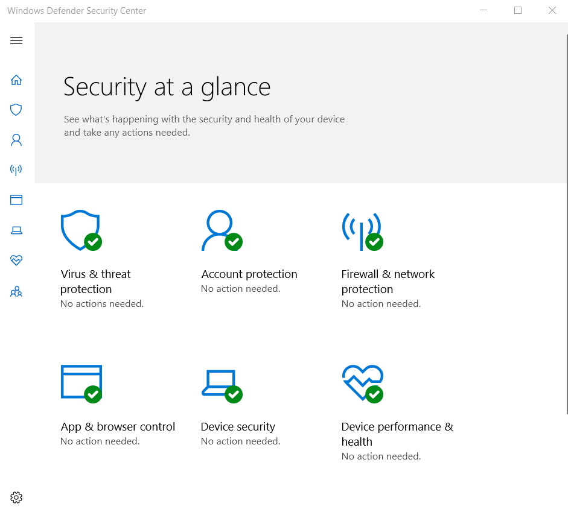
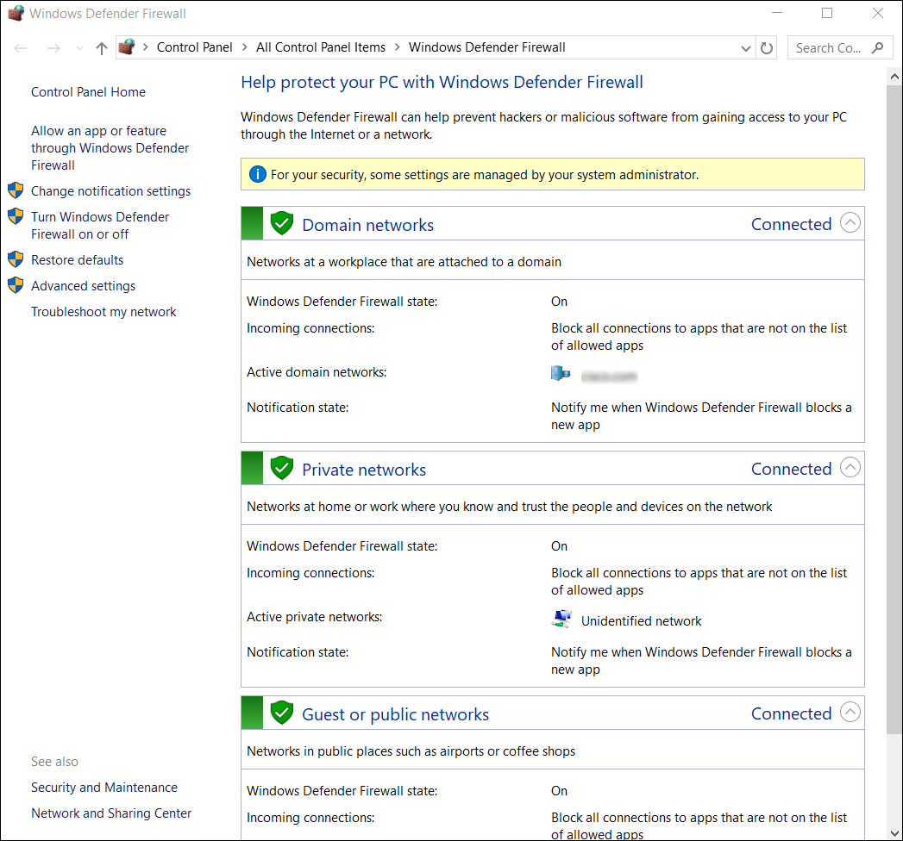

3.4.1 El comando netstat
Cuando hay malware en una computadora, suele abrir puertos de comunicación en el host para enviar y recibir datos. El comando netstat puede usarse para buscar conexiones entrantes o salientes no autorizadas. Cuando se usa solo, el comando netstat permite ver todas las conexiones de TCP activas disponibles.
Al analizar estas conexiones, es posible determinar cuál de los programas está activado para escuchar conexiones no autorizadas. Cuando se cree que un programa puede ser malware, se puede investigar un poco para determinar su legitimidad. Después, el proceso se puede deshabilitar con el Administrador de tareas y es posible usar software de eliminación de malware para limpiar la computadora.
Para facilitar este proceso, es posible vincular las conexiones con los procesos en ejecución en el Administrador de tareas. Para hacer esto, abra un command prompt con privilegios administrativos y use el comando netstat -abno, como se muestra en la salida del comando.

Nota: Si no está en modo administrador, aparecerá el mensaje "La operación solicitada requiere elevación". Busque el Command Prompt Haga clic con el botón derecho del mouse en el programa Command Prompt y haga clic en Ejecutar como administrador.
Al examinar las conexiones de TCP activas, un analista debe ser capaz de determinar si hay programas sospechosos que escuchan conexiones entrantes en el host. También es posible rastrear este proceso hasta el Administrador de tareas de Windows y cancelarlo. Puede haber más de un proceso con el mismo nombre. Si este es el caso, observe el PID para encontrar el proceso correcto. Cada proceso que se ejecuta en la computadora tiene un PID único. Para ver los PID de los procesos en el Administrador de tareas, ábralo, haga clic con el botón derecho en el encabezado de la tabla y seleccione PID.
3.4.2 Visor de eventos
El Visor de eventos de Windows registra el historial de eventos del sistema, de aplicaciones y de seguridad. Estos archivos de registro constituyen una valiosa herramienta de resolución de problemas, debido a que proporcionan información necesaria para identificar un problema. Para abrir el Visor de eventos, búsquelo y haga clic en el icono del programa, como se muestra en la figura.

Windows incluye dos categorías de registros de eventos: registros de Windows y registros de aplicaciones y servicios. Cada una de estas categorías tiene varios tipos de registros. Los eventos que aparecen en estos registros tienen un nivel: información, advertencia, error o crítico. También tienen la fecha y hora en que se produjo el evento, junto con su origen y un identificador relacionado con el tipo de evento.
También es posible crear una vista personalizada. Esto resulta útil para buscar determinados tipos de eventos, encontrar eventos que sucedieron durante un período específico, visualizar eventos de un determinado nivel, y muchos otros criterios. Hay una vista personalizada incorporada que se denomina Eventos administrativos e incluye todos los eventos críticos, de error y de advertencia de todos los registros administrativos. Esta vista es un buen lugar para empezar cuando se intenta resolver un problema.
Los registros de sucesos de seguridad se encuentran en Registros de Windows. Utilizan ID de evento para identificar el tipo de evento.
3.4.3 Administración de actualizaciones de Windows
Ningún software es perfecto, y el sistema operativo Windows no es la excepción. Los atacantes están ideando siempre nuevas maneras de poner en riesgo computadoras y usar código malicioso. Algunos de estos ataques se producen tan rápidamente que las defensas contra ellos aún no han sido concebidas y distribuidas. Son los llamados ataques de día cero. Los desarrolladores de software de Microsoft y de seguridad intentan constantemente adelantarse a los atacantes, pero no siempre lo logran. Para garantizar el máximo nivel de protección contra estos ataques, siempre es necesario asegurarse de que Windows esté actualizado con los paquetes de servicio y parches de seguridad más recientes.
Los parches son actualizaciones de códigos que proporcionan los fabricantes para evitar que un virus o gusano recientemente descubierto logre atacar con éxito. Periódicamente, los fabricantes combinan parches y actualizaciones en una aplicación de actualización integral denominada paquete de servicios. Numerosos ataques de virus devastadores podrían haber sido mucho menos graves si más usuarios hubieran descargado e instalado el último paquete de servicios. Es muy deseable que las empresas utilicen sistemas que distribuyan, instalen y realicen un seguimiento automático de las actualizaciones de seguridad.
Windows verifica sistemáticamente el sitio web de Windows Update en busca de actualizaciones de alta prioridad que ayuden a proteger un equipo de las amenazas de seguridad más recientes. Estas actualizaciones incluyen actualizaciones de seguridad, actualizaciones críticas y paquetes de servicios. Según la configuración seleccionada, Windows descarga e instala automáticamente todas las actualizaciones de alta prioridad que la PC necesita, o notifica al usuario que dichas actualizaciones están disponibles. Para configurar los ajustes de actualización de Windows, busque Windows Update y haga clic en la aplicación.
El estado de actualización, que se muestra en la figura, le permite buscar actualizaciones manualmente y ver el historial de actualizaciones de la computadora.

También hay opciones para no permitir que la computadora se reinicie en determinados horarios, por ejemplo, durante el horario laboral. Además, es posible elegir cuándo reiniciar la computadora después de una actualización con las opciones de reinicio (si es necesario). Las opciones avanzadas también están disponibles para elegir cómo se instalan las actualizaciones y cómo se actualizan otros productos de Microsoft.
3.4.4 Política de seguridad local
Una política de seguridad es un conjunto de objetivos de seguridad que garantiza la seguridad de una red, los datos y los sistemas informáticos en una organización. La directiva de seguridad es un documento en constante evolución según los cambios tecnológicos, negocios, y los requisitos de los empleados.
En la mayoría de las redes que usan computadoras Windows, Active Directory se configura con los dominios en un servidor Windows. Las computadoras con Windows se unen al dominio. El administrador configura una política de seguridad de dominio que se aplica a todas las computadoras que se unen al dominio. Las políticas de cuentas se configuran automáticamente cuando un usuario inicia sesión en una computadora que es miembro de un dominio. La herramienta Directiva de seguridad local de Windows, que se ve en la figura, se puede utilizar para las computadoras independientes que no forman parte de un dominio de Active Directory. Para abrir el applet Directiva de seguridad local, busque “directiva de seguridad local” y haga clic en el programa.

Las pautas para crear contraseñas son un componente importante de las políticas de seguridad. Todo usuario que deba iniciar sesión en una PC o conectarse a un recurso de red debe tener una contraseña. Las contraseñas ayudan a impedir el robo de datos y las acciones malintencionadas. Las contraseñas también ayudan a confirmar que el registro de eventos es válido al garantizar que el usuario es la persona que dice ser. En la Política de seguridad local, la Política de contraseñas se encuentra en Políticas de cuenta y define los criterios para las contraseñas para todos los usuarios en la computadora local.
Utilice la Directiva de bloqueo de cuenta en Directivas de cuenta para evitar los intentos de inicio de sesión forzosos. Por ejemplo, puede configurar la política para permitir que el usuario ingrese un nombre de usuario y / o contraseña incorrectos cinco veces. Después de cinco intentos, la cuenta queda bloqueada por 30 minutos. Después de 30 minutos, la cantidad de intentos se restablece a cero y el usuario puede intentar iniciar sesión nuevamente.
Es importante asegurar que las computadoras estén protegidas cuando los usuarios no las utilizan. Las políticas de seguridad deben incluir una regla que exija que la PC se bloquee al activarse el protector de pantalla. Esto asegura que, cuando el usuario se aleja de la PC durante un período breve, se active el protector de pantalla, y no pueda utilizarse la PC hasta que el usuario inicie sesión.
Si la configuración de Directiva de seguridad local en cada computadora independiente es la misma, es necesario usar la función de Directiva de exportación. Guarde la política con un nombre, como workstation.inf. Luego, copie el archivo de la política a un medio de almacenamiento externo o una unidad de red para utilizarlo en otras computadoras independientes. Esto es especialmente útil si el administrador debe configurar directivas locales extensas para los derechos de usuario y las opciones de seguridad.
El applet Directiva de seguridad local contiene muchas otras configuraciones de seguridad que se aplican específicamente a la computadora local. Puede configurar derechos de usuario, reglas de firewall y hasta la capacidad de limitar la cantidad de archivos que los usuarios o grupos pueden ejecutar con AppLocker.
3.4.5 Windows Defender
El malware incluye virus, gusanos, troyanos, registradores de teclado, spyware y adware. Estos están diseñados para invadir la privacidad, robar información y dañar la computadora o los datos. Es importante que proteja las computadoras y los dispositivos móviles mediante un software antimalware reconocido. Los siguientes tipos de software antimalware se encuentran disponibles:
Es posible que deban utilizarse muchos programas distintos y que deban realizarse varios análisis para eliminar completamente todo el software malintencionado. Ejecute solo un programa de protección contra malware a la vez.
Varias organizaciones con experiencia en seguridad, como McAfee, Symantec y Kaspersky, ofrecen protección contra malware integral para computadoras y dispositivos móviles. Windows tiene protección antivirus y antispyware incorporada llamada Windows Defender, como se muestra en la figura. Windows Defender está activado de forma predeterminada para proporcionar protección en tiempo real contra infecciones.

Para abrir Windows Defender, búsquelo y haga clic en el programa. Aunque Windows Defender funciona en segundo plano, es posible realizar análisis manuales de la computadora y los dispositivos de almacenamiento. También puede actualizar manualmente las definiciones de virus y spyware en la pestaña Actualizar. Además, si desea ver todos los elementos que se detectaron durante análisis anteriores, puede hacer clic en la pestaña Historial.
3.4.6 Firewall de Windows Defender
Un firewall deniega selectivamente el tráfico a una PC o a un segmento de red. Los firewalls suelen actuar abriendo y cerrando los puertos que utilizan diversas aplicaciones. Al abrir solo los puertos requeridos en un firewall, se implementa una política de seguridad restrictiva. Se rechaza todo paquete que no esté explícitamente permitido. En cambio, una política de seguridad permisiva permite el acceso a través de todos los puertos, excepto aquellos que estén explícitamente denegados. En el pasado, el software y el hardware venían con una configuración permisiva. Como los usuarios no tenían la precaución de configurar los equipos, la configuración permisiva predeterminada dejaba muchos dispositivos expuestos a atacantes. Actualmente, si bien la mayoría de los dispositivos vienen con una configuración altamente restrictiva, permiten una fácil configuración.
Para permitir el acceso al programa a través del Firewall de Windows Defender, busque Paneles de control. En Sistemas y seguridad, busque Firewall de Windows Defender. Haga clic en Permitir una aplicación o una función a través del Firewall de Windows Defender, como se muestra en la figura.
Si desea utilizar otro firewall de software, deberá deshabilitar el Firewall de Windows. Para deshabilitar el firewall de Windows, haga clic en Activar o desactivar Firewall de Windows.
Se pueden encontrar muchas configuraciones adicionales en Configuración avanzada. Aquí puede crear reglas de tráfico entrante o saliente según diferentes criterios. También puede importar y exportar políticas o monitorear diferentes aspectos del firewall.
 3.4.7 Comprobar su comprensión - Identificar la herramienta de Windows